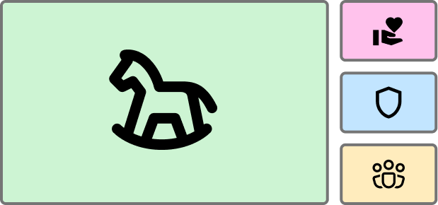
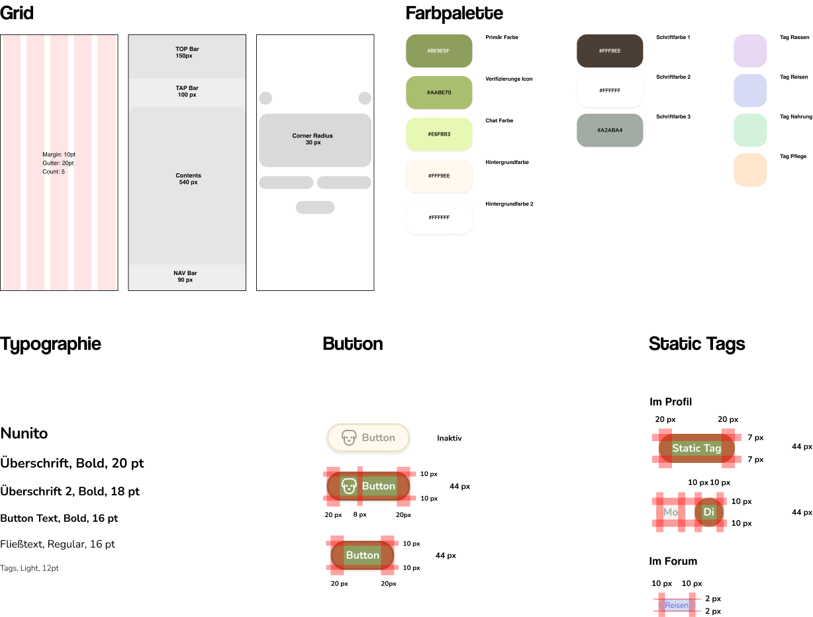
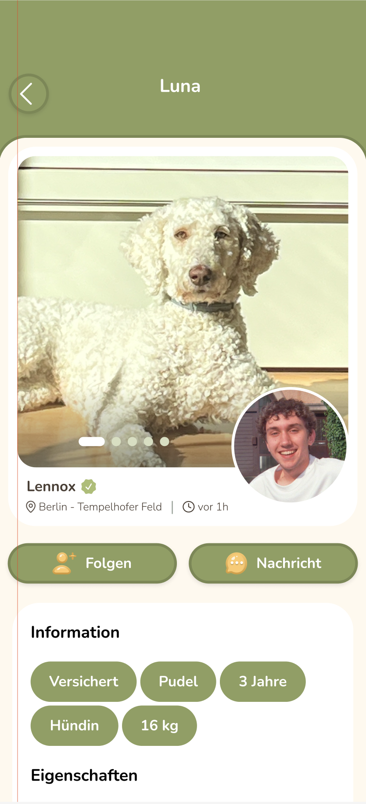
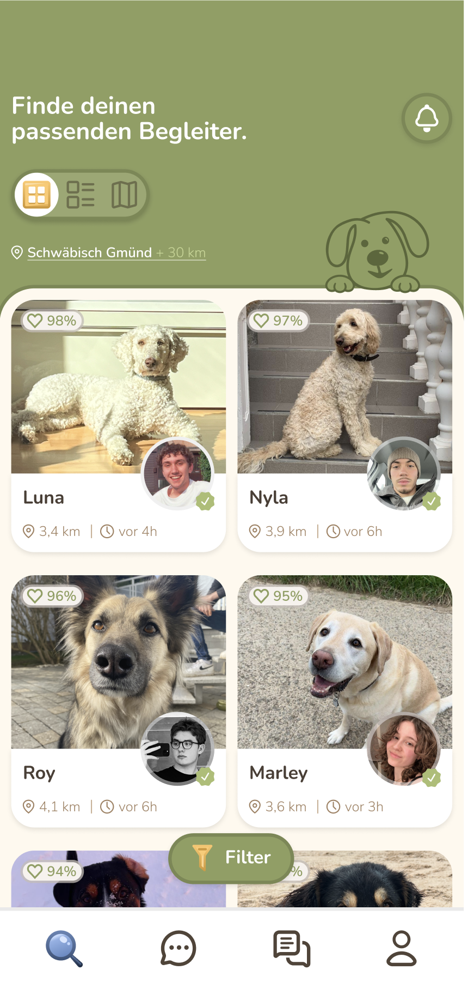
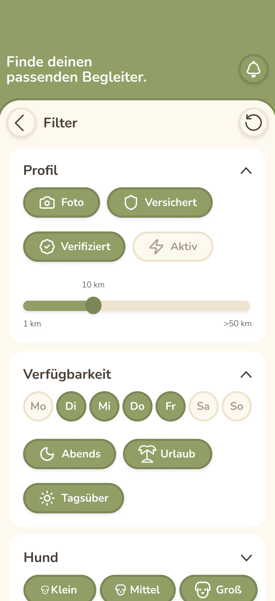
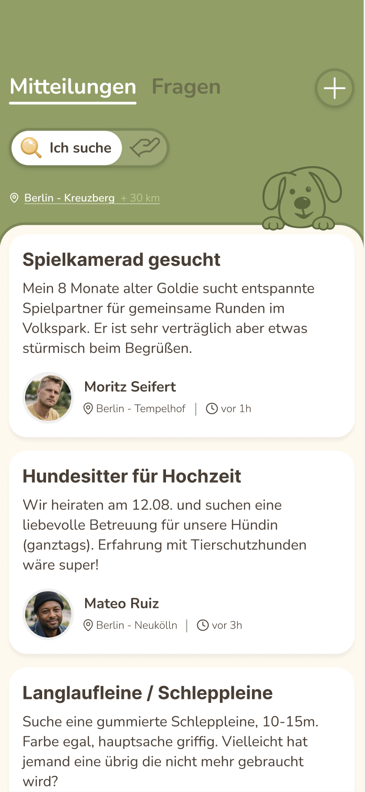
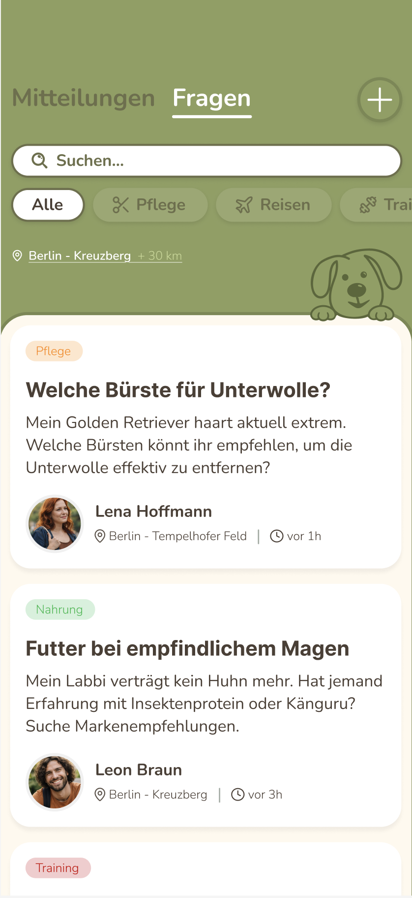

Hundelieb
Overview
Hundelieb vernetzt Hundebesitzer:innen mit Menschen, die Zeit mit Hunden verbringen möchten. In der bestehenden Version führten unklare Strukturen, informationsarme Profile und eine überladene Navigation zu Orientierungsproblemen und einem mangelnden Vertrauen in die Plattform. Ziel des Redesigns war es, diese Schwächen durch eine klare Informationsarchitektur, reduzierte Interfaces und konsistente Design Principles zu beheben.

Konzept
Auf Basis der Value Proposition wurden die Bedürfnisse der Nutzer:innen analysiert, insbesondere Vertrauen, einfache Organisation und soziale Interaktion.

Design Principles
In einem weiteren Schritt setzten wir uns erneut mit den Designprinzipien auseinander und stellten das spielerische Prinzip in den Mittelpunkt. In Bezug auf die Value Proposition wurde deutlich, dass die App auf der gemeinsamen Liebe zu Hunden basiert und genau diesen offenen, positiven Ort widerspiegeln soll. Vertrauen, Wohlbefinden und Zusammenhalt verstehen wir dabei als grundlegende Qualitäten, die durch klare Layouts und transparente Profile unterstützt werden. Mit dem spielerischen Prinzip als Fokus gaben wir dem Designprozess bewusst neuen Raum für Experimente.

Styleguide
Das Interface basiert auf einem klar strukturierten Designsystem mit definiertem Grid, reduzierter Farbpalette und modularen Komponenten. Buttons und Tags wurden konsistent gestaltet, um Wiederverwendbarkeit und Orientierung zu verbessern. Abgerundete Formen und weiche Kontraste greifen die Designsprache des Produkts auf und sorgen für ein harmonisches Gesamtbild.

Projektergebnis




